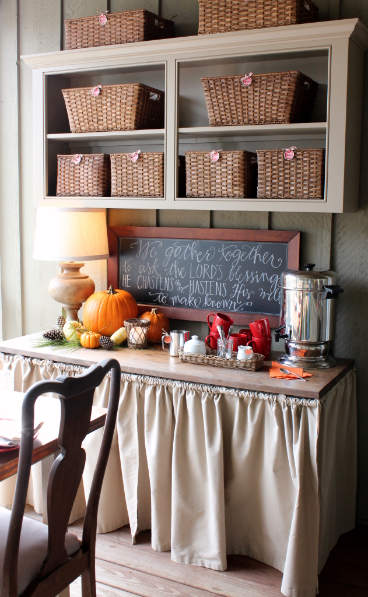

.png)
.PNG)
.PNG)
.PNG)
.PNG)
.PNG)
.JPG)
.JPG)
.PNG)
.PNG)


But you know that cold, I mentioned in our Weekend Talk? Well…by Saturday night I had a fever of 102 degrees, was shivering all over, and I knew it wasn’t just a cold.
I huddled under the covers and ran a fever all day Sunday while the rain fell and the winds blew outside. ¬†My mother says she never remembers running fever. She is lucky. ¬†When I run a fever I hover somewhere between awake and asleep, never a sound sleep, and my thoughts get all muddled….like I can be thinking about chocolate pie, Christmas trees, and tacos all at the same time. Yes, I was craving tacos at 4:00 a.m. this morning. üôÇ
 I will normally drive myself to the doctor when I am sick, but not today. ¬†I was waaay too weak, so my sweet husband took off work to take me. ¬†When I got back to the examining room, the first thing the doctor asked me was, Kelly, have you had your flu shot yet? ¬†And I politely told him, No. ¬†Be quiet. It doesn’t matter that I work with 5 zillion elementary students who have all shared their flu and other sicknesses with me. This is not the flu. ¬†I don’t have any achy joints. ¬†He said, Okay…then let’s listen to your lungs.
I will normally drive myself to the doctor when I am sick, but not today. ¬†I was waaay too weak, so my sweet husband took off work to take me. ¬†When I got back to the examining room, the first thing the doctor asked me was, Kelly, have you had your flu shot yet? ¬†And I politely told him, No. ¬†Be quiet. It doesn’t matter that I work with 5 zillion elementary students who have all shared their flu and other sicknesses with me. This is not the flu. ¬†I don’t have any achy joints. ¬†He said, Okay…then let’s listen to your lungs.
And after doing so and shaking his head he said, No it isn’t the flu. (Ah ha! I was right. üôǬ†) ¬†It’s pneumonia. ¬†Not good. ¬†He gave me some meds, and told me to come back in 48 hours to listen again. ¬†If it has not improved, he wants to discuss the h word….hospital. ¬†üôÅ Boo hiss. ¬†I, like everyone else at this time of year, have too much to do to think about taking time off to be sick.
You would know this would be the week I have off.  It would never happen at a time when I could miss work.
 Enough of the pity party. ¬†I am really not telling you all of this for pity. ¬†I am telling you this because I am trying to write this in bed with an electric blanket on and my laptop is balanced in my lap. ¬†(Probably not a good thing for the laptop.)¬†Anyway, if the photos are too dark or too light or if I have repeated any of them, please forgive me. ¬†I can’t figure out how to tilt the screen to edit the lightness (and my fever is 100.8 right now. üôÇ )
Enough of the pity party. ¬†I am really not telling you all of this for pity. ¬†I am telling you this because I am trying to write this in bed with an electric blanket on and my laptop is balanced in my lap. ¬†(Probably not a good thing for the laptop.)¬†Anyway, if the photos are too dark or too light or if I have repeated any of them, please forgive me. ¬†I can’t figure out how to tilt the screen to edit the lightness (and my fever is 100.8 right now. üôÇ )
So let’s talk about decorating before I get to the end of the photos. ¬†I had planned to do the porch in brown and red for Thanksgiving like the rest of the house. ¬†But I had that pumpkin pillow that is on the sofa in one of the photos near the top of the post, and I had all those pumpkins leftover from October’s decorations, so I just had to go with orange and red out there. ¬†It made perfect sense to me.
So I piled some pine branches, pinecones, and the pumpkins in a dough bowl (from a super kind reader from a whole different continent!) and ended up with a simple but workable holiday centerpiece.
I mixed more leftover pumpkins, pinecones, and pine branches on the buffet and in other spots around the porch.
And there was a little more November decorating that didn’t make its way into a post, so I am including the photos here. ¬†My friend Eddie made this beautiful cotton wreath that is hanging in our hallway. ¬†If you are in the middle Georgia area, she has these 17 inch ones for $45 at¬†Vintage Junktion in Warner Robins.
And I had these leaves in an arrangment in the bedroom for another touch of fall.  (But I took them out this weekend when I got sick.)
As Thanksgiving draws close, I am most thankful for my sweetheart of a husband who is the world’s best nurse…sorry Paula (my sister who happens to be a real nurse.) ¬†He has fetched meds and McDonald’s french fries when I have wanted them, made mashed potatoes for dinner, and gone out to get tacos for lunch for me. üôǬ†I am also thankful that our sons are not coming to visit from Seattle this holiday. ¬†I don’t think I would be very good company for them.
And I am thankful for your friendship. ¬†This online world allows for some amazing and crazy connections doesn’t it? ¬†Here’s hoping your Thanksgiving is full of good times with family and friends. ¬†I am going to be a good patient now and rest…and hopefully I will be back with a post for you on Friday (assuming these medicines kick in.)
Happy Thanksgiving! üôÇ


.PNG)
Oh Kelly,
I am so sorry you hve been so sick. Bless you and I will say some prayers for you!
DiAnne
I’m so sorry you are sick! Good thing you went to the doctor because pneumonia is scary and can be deadly! I used to not think so, but we almost lost our grandson to it and I will never take it lightly again. So please follow doctors order and get better quickly!
I so enjoy your blog and I thank you for sharing your lovely home with all of us! I can’t wait to see your Christmas decorating! You always have such great ideas!
Bless you, Kelly! Praying for you some speedy recovery! Too much fun to be had üôÇ Everything looks wonderful as always!
So sorry you are sick… That darn car line! Hope you are feeling better and had a Happy Thanksgiving!!! Love the pumpkin dough bowl centerpiece and Eddie’s wreath!
Hi Kelly,
I am very sorry to hear that you are not well this holiday. Please take care and get lots of rest. It takes a while to recover from pneumonia. You might want to talk to your doctor about the vaccine. It has helped me. It used to get it almost annually.
i hope that you have a lovely and restful holiday.
Hope you are feeling better! No fun being sick when you are actually off work üôÅ Your decorations are very pretty and I really like that pumpkin pillow! Blessings to you and your family!
Happy Thanksgiving Kelly! I hope you feel better!
Kelly, I’m sorry to hear you’re so sick. Please take care of yourself & get some rest. Pneumonia is awful anytime, but so much worse at the holidays when you’re trying to do so much. I hope you and your family have a wonderful & healthy Thanksgiving! Thanks for the tip on the shop in Warner Robins, I will have to check it out. Now, go get some rest!
So sorry to hear about your pneumonia – that stinks! Hope you let your family take care of you and can just relax and enjoy whatever Thanksgiving festivities you can manage. Just fyi – your blog brings so much JOY to us readers…I wish we could all “pay you back” by bringing you chicken soup or whatever might make you feel better! Thanks again for all you do for your loyal readers:)
You just take of yourself and FEEL BETTER soon! Just so you know, I am so very THANKFUL for you and Talk of the House–and all the wonderful encouragement and inspiration you provide for all your readers! I realize that a lot of hard work and thought goes into each and every post…and none of it is taken for granted. Sending hugs and prayers from down here in deep(er) south GA! And may you and your sweet family have a blessed and happy Thanksgiving! üôÇ
Feel better soon, don’t overdo it. Will be thinking of you on Thursday!
So sorry you’re feeling ill! And I get it – sick when you already HAVE the time off (I didn’t get a flu shot either…) I’d love to hear how your boys are doing and where they ended up.
Kelly, I’m so sorry you are under the weather. There’s nothing more frustrating than being sick during the holiday. You said your sons weren’t coming home so let someone wait on you and get better. You know you want to be well and in good spirits by Christmas!
Poor girl! Stay warm–you know laptops are as good as an electric blanket, right? üòâ I have always figured I don’t need a flu shot either, as I work in a school (aka “germ lab”). I prescribe hot toddies while snuggled up warmly + internet surfing. Get well soon!
Hope you feel better soon. Hope you have a Happy Thanksgiving!
Oh hon, the most important thing is you rest and get better asap. I’m sending you good wishes, and hope you have a happy Thanksgiving!
Hope you feel better soon. Happy Thanksgiving!
Dear Kelly,
I love your blog. Thank you for the beautiful pictures and sharing your lovely house. Have your rest and get well again. Have a wonderful Thanksgiving.
Kelly, you are amazing, with amazing talent!! Get well soon.
Hi Kelly
Just a few suggestions…Rest….Enjoy Thanksgivine….Rest…Be thankful for all your blessings…Rest….And throw in a daily mid-day nap. May you have a speedy recovery and no h-word, please.
Oh my…sorry to hear it’s pneumonia! Well, you know the drill I’m sure, get lots of rest…drink plenty of liquids…take your meds…and have a Happy Thanksgiving! Next time you get sick….don’t do it while you are on break! üòâ
You need to take Pneumonia very seriously. Even as you start to feel better, take it slow. Happy Thanksgiving.
So sorry to hear you are under the weather! Hope your meds kick in and you are feeling better by Thanksgiving Day!
Kelly, So sorry you are feeling so poorly. Hooray! for wonderful husbands who take care of us! Have him being you some nice spiced tea, prop you up on fluffy pillows and get on the phone to Publix for a turkey dinner you won’t have to cook. Get some well deserved rest and we will all be looking forward to your posts when you have recovered.
You poor thing–so sorry that you are so sick. Pneumonia takes REST & TIME–allow yourself both to get well. I loved reading that your husband is such a wonderful nurse. My hubby had the flu two weeks ago, & after a recheck tonight, is now back on an antibiotic for a sinus infection. Here in the western suburbs of Chicago, entire classrooms of students and teachers have been out….
illness is hitting early this yr. i’m praying for your healing, Kelly.
Kelly,
I wish you a speedy recovery. I know you must hate being sick right now with the holidays looming. I think you are in good hands with your sweet husband taking such good care of you.
I hope you have a relaxing Thanksgiving, get well soon, my friend.
xo,
Karen
Kelly, so very sorry you are sick. I hope and pray the meds work and you are better soon.
Kelly – oh my – get well soon!! (I have a broken wrist myself, oy!)
Praying you are feeling better soon, Kelly! I, too, am amazed you put together this post. I know it can get old lying in bed all day. Your hubby sounds like a good man. Take care of yourself!
Feel better, Kelly! I am thankful for you sharing your creativity with us through your wonderful blog!
I am so sorry that your are sick and pray that you are well soon. What a terrible week to be sick, work or not! I love you chalkboard. Your handwriting is spectacular!
Kelly,
I am sending you prayers of good health. I know how incredibly difficult it is to “just be sick.” I appreciate your post but I hope you get some rest and recover quickly so you can get back to your usual business. Take care and have a restful, healthier Thanksgiving!
Kelly….you are in my thoughts and prayers….get well soon. Why is it that we, I mean us women, never get sick until we are taking time off…it’s like our body relaxes, knowing we are getting time off and that’s when the ugly bugs attack! Feel better.
I really enjoy seeing pictures of your porch. I think I could live there forever….if you ever need a tenant. I absolutely love your little peculator…..coffee pot….where in the world did you find that???
Your blog is absolutely one of my very, very favorites but in the interest of getting you well, I can “survive” w/o it for a time. üôÇ Take ALL the time you need to get “fully” well.
Re pneumonia. I had it last year just at this time. Learned the hard way that “the pneumonia shot” (which I had had some years ago) was only good for one of the 20 DIFFERENT varieties of pneumonias out there. So. When you get well, check with your doctor and get the most up to date “variety”.
Loved your decorations!
Your photos of your home are so lovely. Take care of yourself. We don’t want the “H” word to happen! I commiserate with you. I had ankle surgery two weeks ago, and I’m typing sitting up in bed on my laptop. But I live alone, so no nurses!
Brenda
Kelly, please take care of yourself and get well soon. Don’t ever worry about answering emails, blogging alone is time consuming. I hope you are able to have a happy Thanksgiving and feel like eating some of the goodies!
Glad you have someone good to take care of you in this time of need.
Rest and get well. We are seeing a lot of that in our clinic lately.
Prayers for speedy recovery and a blessed Thanksgiving.
Happy Thanksgiving to you and your family! As usual, your home looks beautiful. I’m thankful for your blog and that you are willing to share your home with us. Hope you feel better soon.
Kelly, please take care of yourself and feel better soon! Try to have a Happy Thanksgiving…relax and be pampered!
Oh, Kelly! I feel so bad! I am the Queen of pneumonia and bronchitis, a fever means you are infected and you need those antibiotics pronto! I’m not a nurse, I just know a lot of them! Ha! And you are a loyal blogger, there are days when I’m fine and I can’t bear the thought of putting together a post! Laptops just don’t seem to be made for laps in my opinion. A woman didn’t invent them.
I LOVE your fall decor. My favorite? The pine sprigs in the bowls of pumpkins and squash. Simple and perfect! Your colors are great also.
Happy Thanksgiving and get well soon.
Jane xx
Oh, dear Kelly, I’m so sorry you’re sick. Please rest and take care of yourself. You would hate to have to eat turkey dinner you-know-where…..blech!,
I love the orange and red together on your Thanksgiving porch. And I love the hymn on your chalkboard. We really should sing it more often.
Praying you feel better soon! Happy Thanksgiving!
Get.well.soon.
I think the bug you are dealing with is making the rounds here in the Midwest too. My second daughter just got over pneumonia four weeks ago, on to have her whole family come down with a flu bug now. Her included. Several schools outside of Chicago had to close for a day or so because of too many absent students. Yes, it does seem being a teacher does expose you that much more to these terrible viruses. üôÅ On that mentioned Flu shot, well, raised hand here. üôÅ I’ll be bad with you. I had a terrible start to 2014 and you think I would have learned my lesson and had gotten one already. Well, at least my husband and youngest daughter went ahead and did so. I can’t believe you are still going ahead with hosting Thanksgiving. Please try and pull back. Though we love you for this sweet post. I think we would survive if we had to go for a week or two without your blog posts. Ugh! Did I really just type that?? (Who am I kidding) We love you Kelly..so please get your rest. Be sure to take whatever babying you can grab. Get Well!
——————————————————————
That is terrible about your daughter Debra! Thank you for the well wishes. I was hoping to host a dinner Thanksgiving night, but not now. We are doing the inlaws for Thanksgiving lunch and then a Thanksgiving with my side of the family on Sunday. Resting until then…
Kelly
Oh Kelly: I am totally amazed at what you were able to accomplish while sick. You are super woman! I felt your pain throughout the whole post and pray that you will recover beautifully. Just stay in bed and meditate on the goodness of the Lord and thank Him for blessing you with good health and such a sweet helpful hubby who would feed you tacos….the desire of your heart for the moment:-) Blessings to you and yours at this wonderful time of giving thanks to the Lord…the greatest giver of all time.
Looking good and have a wonderful Thanksgiving!
All your Thanksgiving decorations look fabulous!
I am so,so sorry that you are sick and I really hope the “H” word is not in your future!!! I hope that by the time you read this you are well on the way to mending!!!
I am never ( hardly ever) sick other than a fall and spring sinus infection. We had such a great weekend in Greenville, SC seeing James Taylor and Christmas shopping on Sat and Sun! Then we returned home to a shrimp and grits dinner at at a friends. I woke up at 4 this morning shaking so hard from a fever that it woke my husband up. The picture got much uglier by 4:30 when I started throwing up…. Thankfully I have a husband like yours! He has piled blankets on me, washed sheets and towels and cleaned bathrooms most of the day.
I guess I just picked up a bug but pneumonia is a whole different story!! Please take care of yourself, Kelly. And goodness, don’t worry about responding to fans comments.
Happy Thanksgiving! Calling for snow in western NC.
—————————————————————–
When I first started reading your comment I thought you were just making me jealous…James Taylor, Christmas shopping, and shrimp and grits, but then I read further. Bless your heart! Get well!
Kelly
Beautiful post… but so sorry you’re sick. Pneumonia is no fun (speaking from experience). Rest, rest, rest! Take care and Happy Thanksgiving to you and your family.
-Maureen
Feel Better Soon!!
OMGoodness, Kelly! How could you do a post while feeling that badly?!? You must really be the queen of over-achievers! I am so sorry you are sick! Two more things we have in common…I never get a flu shot AND my sister is a nurse named Paula. (That is a lie, her name is Cindy but she is a nurse.) I love the cotton wreath and your chalkboard. Of course, I am going to copy it. Feel better soon! That H-word is not a fun place especially this time of year! I am going to say a get well prayer for you.
Look at you! Sick sick sick and sharing this beautiful post with us. Rest and get well so you can avoid the h.
Bless your heart …..take it easy, get well. Your pictures of your home are beautiful, as usual!
Your not so good news was the fourth bad thing today that has my smile turned upside down. Hoping you are on the mend quickly– rest and take your medicine. At least you have the week off — but not the way to spend a vacation! Love all your photos and will go back and look at them all again and again. You are a blessing in my life. Please get well soon!
Kelly- take good care of yourself and don’t worry about the bog. Certainly hope that it’s not pneumonia! Hope you’re able to enjoy Thanksgiving and that someone else will be doing the cooking. Get well soon!
So sorry you’re sick. Take care of yourself and rest. You don’t have to do everything yourself, or necessarily everything you set out to do. Getting sick when you have time off isn’t that surprising to me. It’s happened to me, my husband, and friends. Something about the let down that signals your body it’s OK to be sick now. Even though it’s not as if you didn’t have anything to do or didn’t have plans. Sounds crazy, but I’ve seen it happen time and again. My takeaway has been to remember to rest and relax and not keep pushing all the time. It may be particularly hard for those of us with perfectionist tendencies. Hope you’re feeling better soon!
Kelly stop decorating and rest. Pneumonia is nothing to fool with. When you are better, get a flu shot AND a pneumonia shot too. Also do NOT use menthol cough drops. They make more mucus. Use a fruit cough drop – Halls breezers are a good choice. I hope you feel better soon. Take good care of yourself and please rest!
Pneumonia is serious! Take it easy and follow doc’s orders.
Everything looks so beautiful, as always. I adore your cotton wreath.
Happy Thanksgiving!
Please rest and get better ~ pneumonia isn’t fun at all. Thank you for sharing your Thanksgiving house with us. It looks just right, and I hope someone else is making your holiday meal for you!
Happy Thanksgiving! Hope you feel better soon. Take care of yourself!
So sorry that you are sick! Feel better fast! With all of the many things that I am thankful for, I must include your blog and the time and talent that goes into it. It is always the highlight of my day! ~Anne
I am sending healing vibes your way!